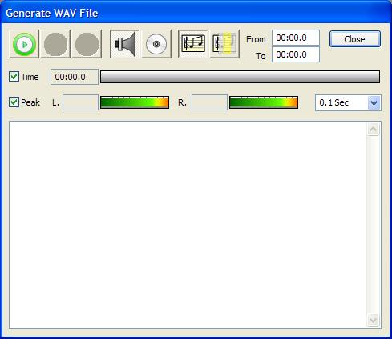

To play the score, select Project->Generate on the main menu. You can also use the toolbar (press the white arrow in the green box). The generate/playback form is displayed.
You can either play the sound directly through the computer's sound card, or can generate an output file to be played by some other program. In addition, you can select a portion of the composition using the From and To values. For now, select the speaker button on the form to send the output to the sound card and select All to play all of the composition. Press the Start button to begin playback. You should hear a scale played back. When the sound is finished, press the Close button on the form.
At this point it would be a good idea to save the project. Select File->Save Project from the menu to do this.
Next: Add more instruments...